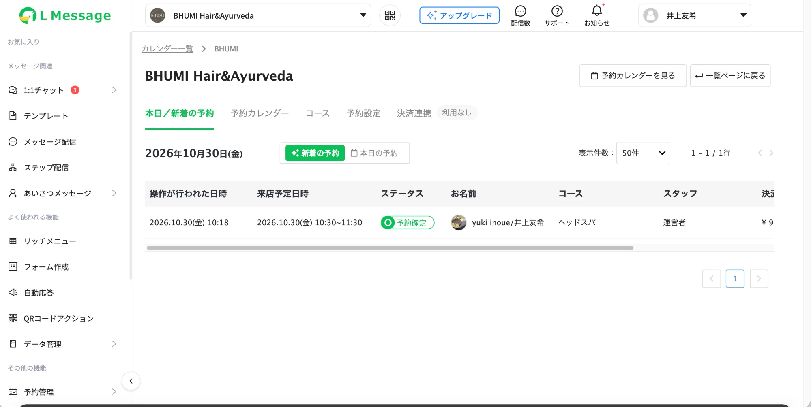
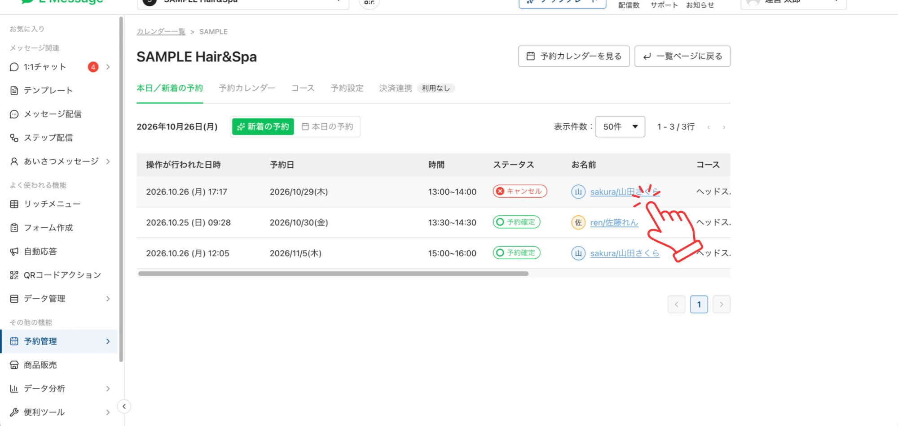

改善予約一覧
予約詳細へのアクセス改善
BEFORE現行

AFTER提案

【課題分析】
現行のUIでは、予約一覧のテーブル幅が画面幅を超えており、詳細ボタンが画面外に見切れています。予約詳細を確認するたびに横スクロールが必要となるため、ボタンを見つけづらく、一覧確認時の操作負担が生じます。
【提案内容】
予約詳細を開くリンクを、詳細ボタンから一覧のお客様名へ移しました。画面内に表示されているお客様名から、その行の予約詳細モーダルを直接開けるようにすることで、横スクロールの手間を省き、予約情報へ素早くアクセスできる設計にしました。